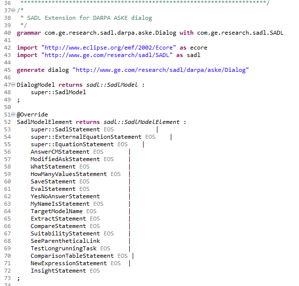

It is possible to extend the SADL grammar and IDE to provide additional language and editor capabilities on top of SADL. Examples of this include GE Aviations SADL Requirements Language (SRL), part of the ASSERT(TM) Requirements Capture Environment (RCE) (see https://ieeexplore.ieee.org/document/8049134, https://ieeexplore.ieee.org/document/8102059) and the DARPA ASKE Dialog grammar and ANSWER IDE.
The basic process for accomplishing such an extension is as follows:

Note especially lines 40, 43, 47-48. References to SADL gramamr elements are expressed as, for example, "sadl::SadlModel". Note that "sadl::SadlModelElement" includes some elements from the SADL grammar, lines 53-55, and new model elements, lines 56-72.
The Dialog project should provide many useful examples of how SADL can be extended.